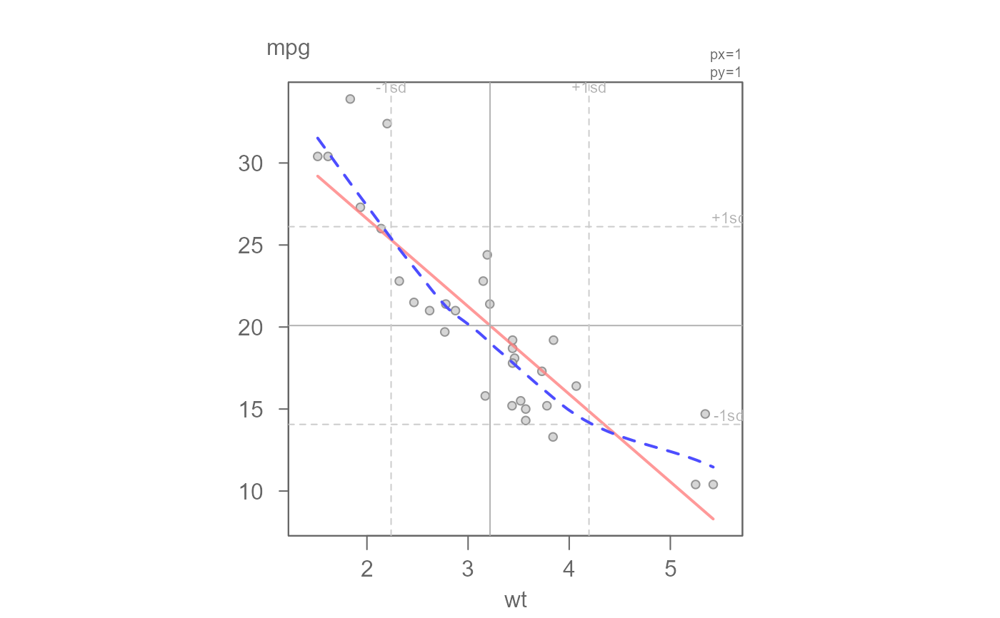
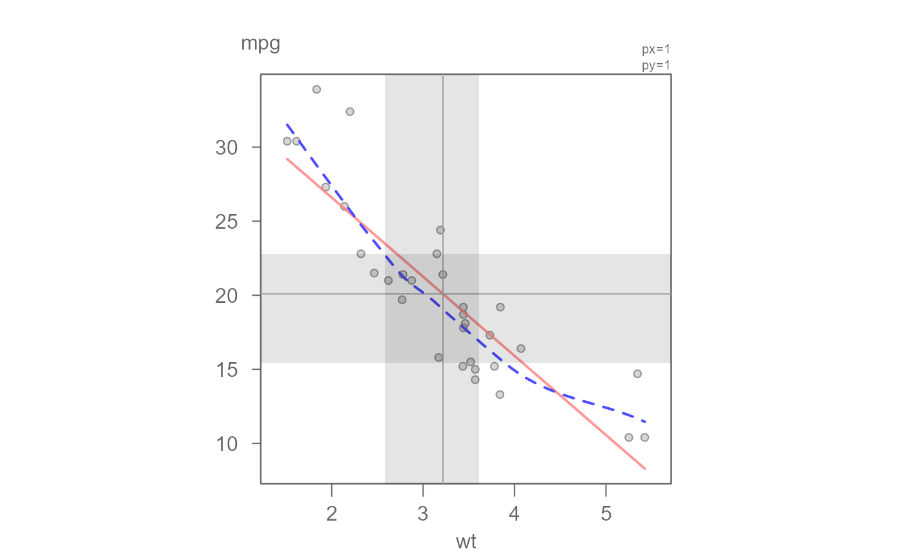
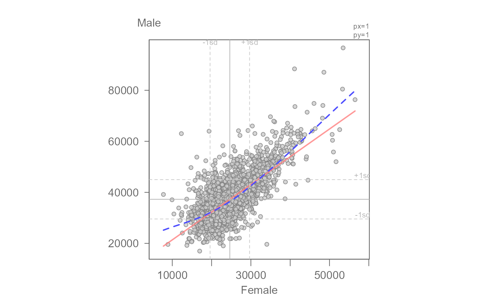
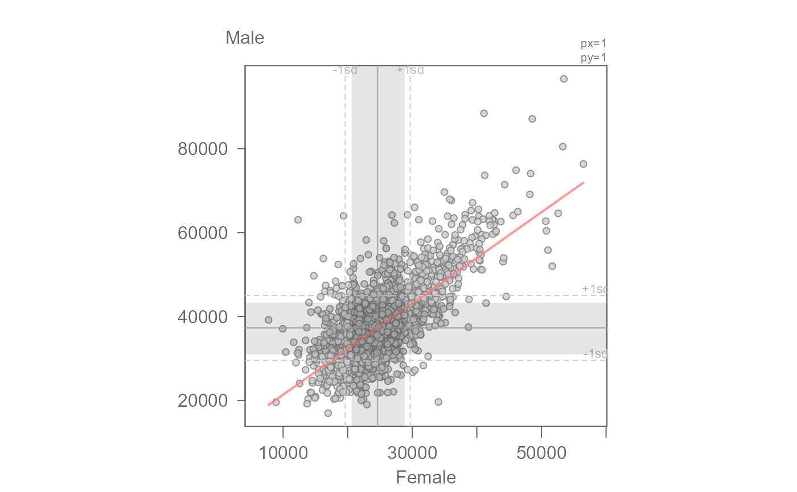
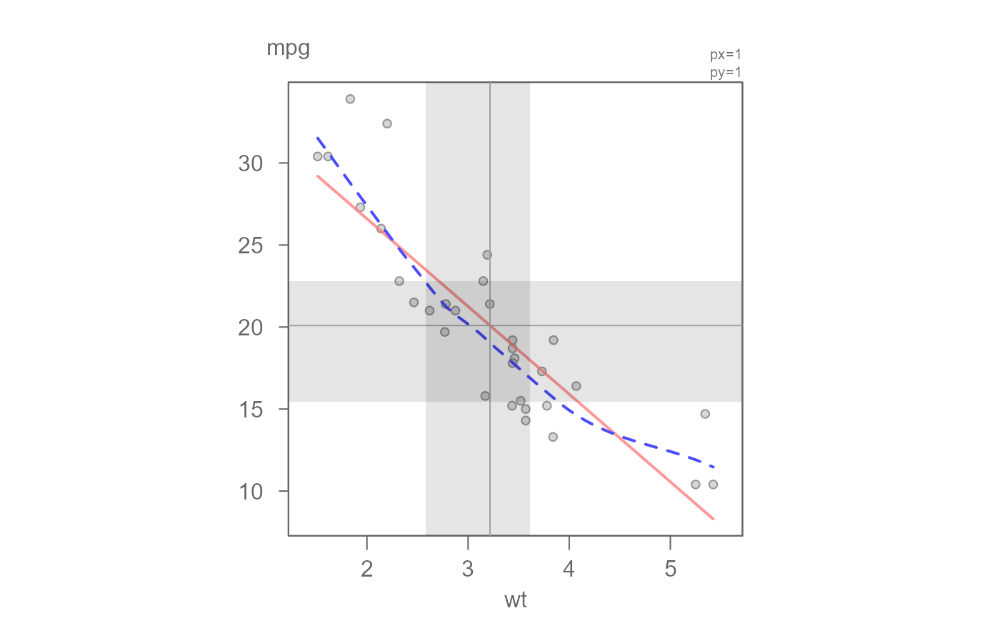
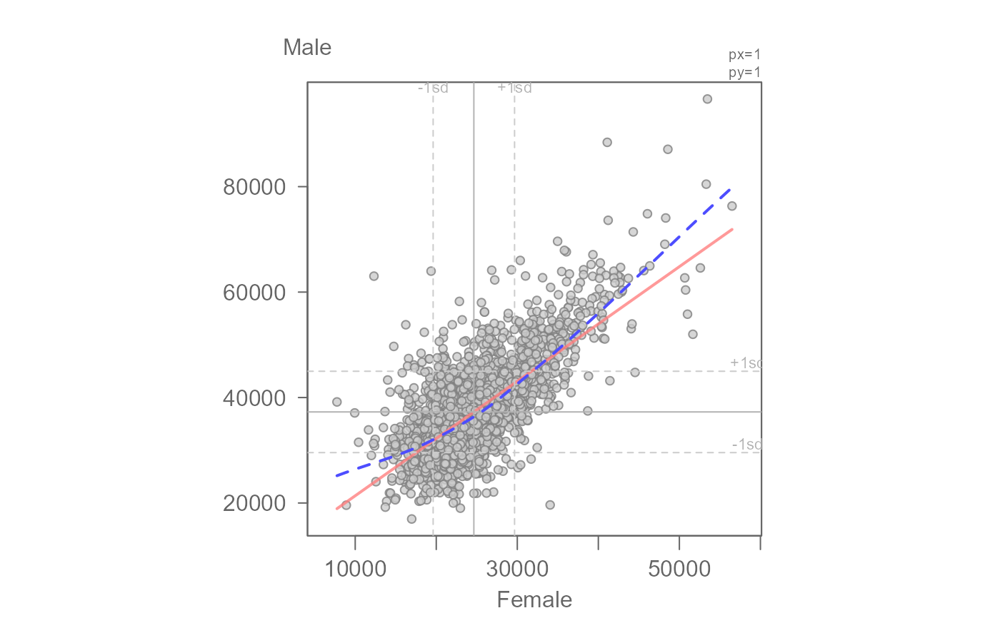
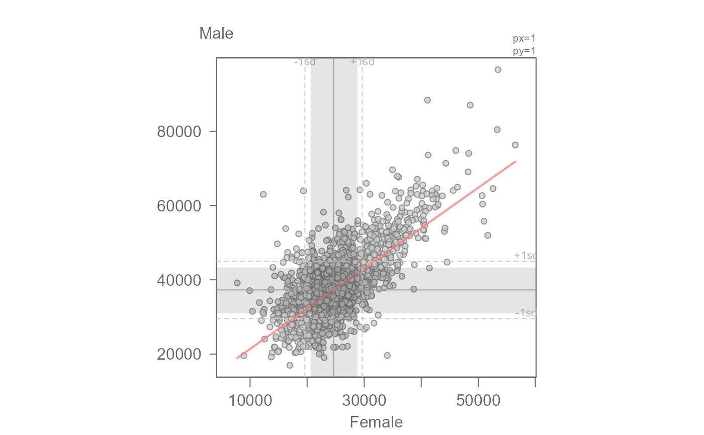

eda_lm generates a scatter plot with a fitted regression
line. A loess line can also be added to the plot for model comparison. The
axes are scaled such that their respective standard deviations match axes
unit length.
Usage
eda_lm(
dat,
x,
y,
xlab = NULL,
ylab = NULL,
px = 1,
py = 1,
tukey = FALSE,
show.par = TRUE,
reg = TRUE,
poly = 1,
robust = FALSE,
w = NULL,
sd = TRUE,
mean.l = TRUE,
asp = TRUE,
grey = 0.6,
pch = 21,
p.col = "grey50",
p.fill = "grey80",
size = 0.8,
alpha = 0.8,
q = FALSE,
inner = 0.68,
q.type = 5,
loe = FALSE,
lm.col = rgb(1, 0.5, 0.5, 0.8),
loe.col = rgb(0.3, 0.3, 1, 1),
stats = FALSE,
stat.size = 0.8,
loess.d = list(family = "symmetric", span = 0.7, degree = 1),
rlm.d = list(psi = "psi.bisquare"),
...
)Arguments
- dat
Dataframe.
- x
Column assigned to the x axis.
- y
Column assigned to the y axis.
- xlab
X label for output plot.
- ylab
Y label for output plot.
- px
Power transformation to apply to the x-variable.
- py
Power transformation to apply to the y-variable.
- tukey
Boolean determining if a Tukey transformation should be adopted (FALSE adopts a Box-Cox transformation).
- show.par
Boolean determining if power transformation should be displayed in the plot.
- reg
Boolean indicating whether a least squares regression line should be plotted.
- poly
Polynomial order.
- robust
Boolean indicating if robust regression should be used.
- w
Weight to pass to regression model.
- sd
Boolean determining if standard deviation lines should be plotted.
- mean.l
Boolean determining if the x and y mean lines should be added to the plot.
- asp
Boolean determining if the plot aspect ratio should equal the ratio of the x and y standard deviations. A value of
FALSEdefaults to the base plot's default aspect ratio. A value ofTRUEuses the aspect ratiosd(x)/sd(y).- grey
Grey level to apply to plot elements (0 to 1 with 1 = black).
- pch
Point symbol type.
- p.col
Color for point symbol.
- p.fill
Point fill color passed to
bg(Only used forpchranging from 21-25).- size
Point size (0-1).
- alpha
Point transparency (0 = transparent, 1 = opaque). Only applicable if
rgb()is not used to define point colors.- q
Boolean determining if shaded region showing the mid-portion of the data should be added to the plot.
- inner
Fraction of mid-values to highlight in
q. Defaults to the mid 68 percent of values.- q.type
Quantile type. Defaults to 5 (Cleveland's f-quantile definition).
- loe
Boolean indicating if a loess curve should be fitted.
- lm.col
Regression line color.
- loe.col
LOESS curve color.
- stats
Boolean indicating if regression summary statistics should be displayed.
- stat.size
Text size of stats output in plot.
- loess.d
A list of arguments passed to the
loess.smoothfunction. A robust loess is used by default.- rlm.d
A list of arguments passed to the
MASS::rlmfunction.- ...
Not used.
Value
Returns a list of class eda_lm. Output includes the following
if reg = TRUE. Returns NULL otherwise.
residuals: Regression model residualsa: Interceptb: Polynomial coefficient(s)fitted.values: Fitted values
Details
The function will plot a regression line and, if requested, a loess
fit. The function adopts the least squares fitting technique by default. It
defaults to a first order polynomial fit. The polynomial order can be
specified via the poly argument.
The plot displays the +/- 1 standard deviations as dashed lines. In
theory, if both x and y values follow a perfectly Normal distribution,
roughly 68 percent of the points should fall in between these lines.
The true 68 percent of values can be displayed as a shaded region by
setting q=TRUE. It uses the quantile function to compute
the upper and lower bounds defining the inner 68 percent of values. If the
data follow a Normal distribution, the grey rectangle edges should coincide
with the +/- 1SD dashed lines.
If you wish to show the interquartile ranges (IQR) instead of the inner
68 percent of values, simply set inner = 0.5).
The plot has the option to re-express the values via the px and
py arguments. But note that if the re-expression produces NaN
values (such as if a negative value is logged) those points will be
removed from the plot. This will result in fewer observations being
plotted. If observations are removed as result of a re-expression a
warning message will be displayed in the console.
The re-expression powers are shown in the upper right side of the plot. To
suppress the display of the re-expressions set show.par = FALSE.
If the robust argument is set to TRUE, MASS's
built-in robust fitting model, rlm, is used to fit the regression
line to the data. rlm arguments can be passed as a list via the
rlm.d argument.
See also
plot and loess.smooth
functions
Examples
# Add a regular (OLS) regression model and loess smooth to the data
eda_lm(mtcars, wt, mpg, loe = TRUE)

#> int wt^1
#> 37.285126 -5.344472
# Add the inner 68% quantile to compare the true 68% of data to the SD
eda_lm(mtcars, wt, mpg, loe = TRUE, q = TRUE)
 #> int wt^1
#> 37.285126 -5.344472
# Show the IQR box
eda_lm(mtcars, wt, mpg, loe = TRUE, q = TRUE, sd = FALSE, inner = 0.5)

#> int wt^1
#> 37.285126 -5.344472
# Fit an OLS to income for Female vs Male
df2 <- read.csv("https://mgimond.github.io/ES218/Data/Income_education.csv")
eda_lm(df2, x=B20004013, y = B20004007, xlab = "Female", ylab = "Male",
loe = TRUE)

#> int Female^1
#> 10503.090485 1.086416
# Add the inner 68% quantile to compare the true 68% of data to the SD
eda_lm(df2, x = B20004013, y = B20004007, xlab = "Female", ylab = "Male",
q = TRUE)

#> int Female^1
#> 10503.090485 1.086416
# Apply a transformation to x and y axes: x -> 1/3 and y -> log
eda_lm(df2, x = B20004013, y = B20004007, xlab = "Female", ylab = "Male",
px = 1/3, py = 0, q = TRUE, loe = TRUE)
#> int Female^1
#> 8.58646713 0.02287702
# Fit a second order polynomial
eda_lm(mtcars, hp, mpg, poly = 2)
#> int wt^1
#> 37.285126 -5.344472
# Show the IQR box
eda_lm(mtcars, wt, mpg, loe = TRUE, q = TRUE, sd = FALSE, inner = 0.5)

#> int wt^1
#> 37.285126 -5.344472
# Fit an OLS to income for Female vs Male
df2 <- read.csv("https://mgimond.github.io/ES218/Data/Income_education.csv")
eda_lm(df2, x=B20004013, y = B20004007, xlab = "Female", ylab = "Male",
loe = TRUE)

#> int Female^1
#> 10503.090485 1.086416
# Add the inner 68% quantile to compare the true 68% of data to the SD
eda_lm(df2, x = B20004013, y = B20004007, xlab = "Female", ylab = "Male",
q = TRUE)

#> int Female^1
#> 10503.090485 1.086416
# Apply a transformation to x and y axes: x -> 1/3 and y -> log
eda_lm(df2, x = B20004013, y = B20004007, xlab = "Female", ylab = "Male",
px = 1/3, py = 0, q = TRUE, loe = TRUE)
#> int Female^1
#> 8.58646713 0.02287702
# Fit a second order polynomial
eda_lm(mtcars, hp, mpg, poly = 2)
 #> int hp^1 hp^2
#> 40.4091172029 -0.2133082599 0.0004208156
# Fit a robust regression model
eda_lm(mtcars, hp, mpg, robust = TRUE, poly = 2)
#> int hp^1 hp^2
#> 39.3003734539 -0.2062942523 0.0004113048
#> int hp^1 hp^2
#> 40.4091172029 -0.2133082599 0.0004208156
# Fit a robust regression model
eda_lm(mtcars, hp, mpg, robust = TRUE, poly = 2)
#> int hp^1 hp^2
#> 39.3003734539 -0.2062942523 0.0004113048